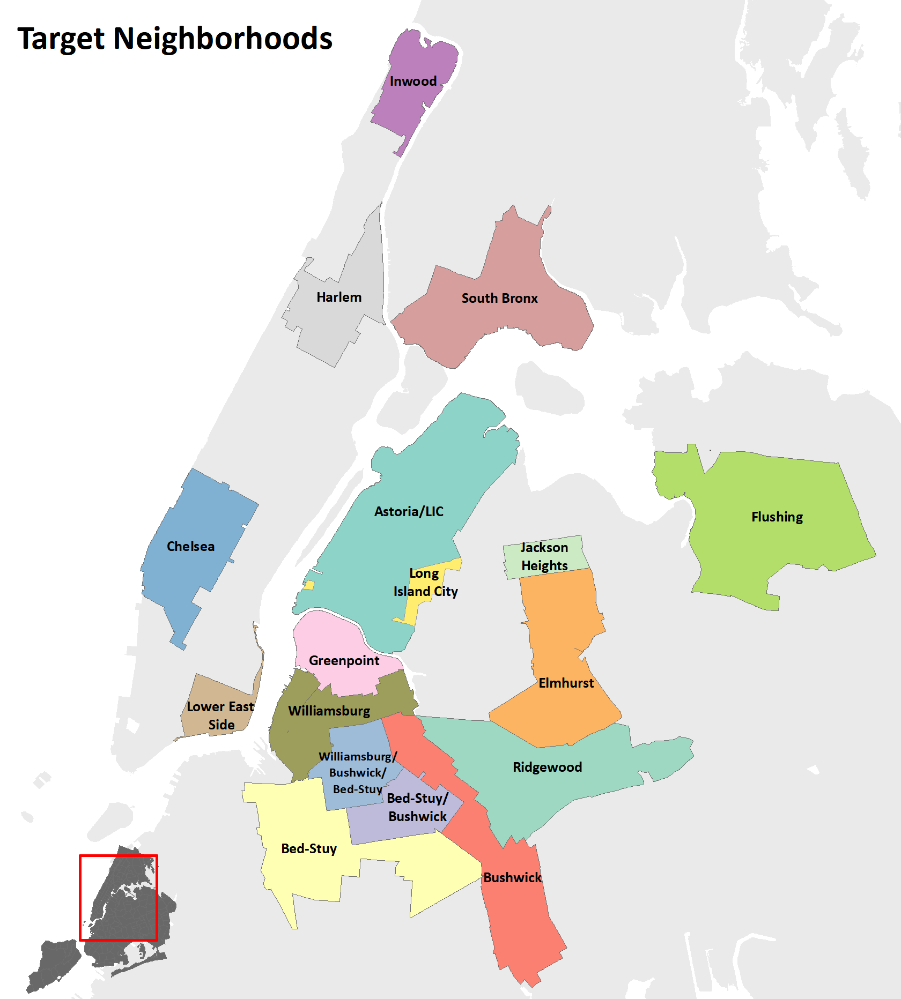
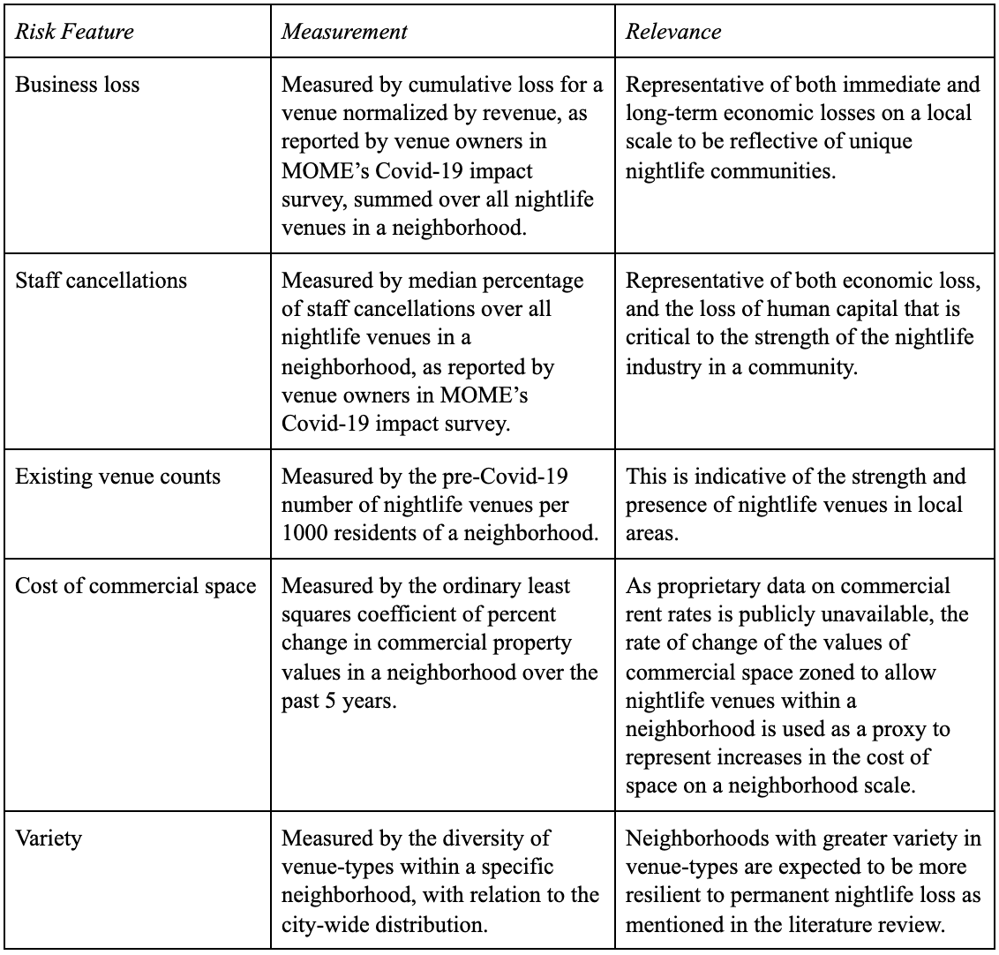
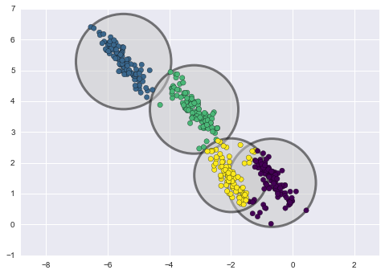

Dashboard
View nightlife characteristics and risk of permanent COVID-19-related venue closures for 17 New York City neighborhoods.


Project Summary
Motivation
The unprecedented three-month shutdown resulting from Covid-19 has disproportionately affected the service and entertainment industries. Continued reports of long-standing venues permanently closing due to the extended shutdown illustrate both the sensitivity of these businesses to disruptions in the local economy, as well as expose the persistent barriers to operating these businesses face. One restaurant owner describes the pandemic as “the straw that broke the camel’s back” in “an industry that has been dying for a long time” in Eater NY. As dozens of culturally-rich NYC venues have already announced permanent closure in the past few months, MOME is urgently assessing the potential short- and long-term effects on NYC’s nightlife industry and developing a response to minimize business closures and lasting effects on the industry.
Problem Statement:
Due to Covid-19 closures and rising rent costs, many nightlife businesses face the risk of permanent closure. This analysis and dashboard intend to predict which neighborhoods are at the highest risk of permanent loss of nightlife, and characterize each neighborhood’s nightlife culture through text analysis to understand what is at risk of being lost.
Overview
New York City nightlife is a bustling $35.1 billion industry with world-renowned culture and community that draws people from all over the world (NYC MOME, 2019). With rising rent costs, gentrification, and most recently, Covid-19 shutdowns, the NYC Mayor’s Office of Media and Entertainment (MOME) is exploring supportive policies that can help the nightlife industry recover, adapt, and thrive for years to come. By analyzing MOME’s Covid-19 survey and incorporating neighborhood factors known to affect the well-being of the nightlife industry, the team will develop an interactive dashboard that displays the neighborhoods predicted to be at highest risk of experiencing permanent nightlife cultural loss. Additionally, text analysis of widely used sources describing local nightlife will reveal each neighborhood’s defining cultural characteristics, thus contextualizing and humanizing potential losses.
Policy Implications
As New York City looks towards enacting evidence-based policies that support local businesses survive through this unprecedented era, this research and dashboard tool promotes equitable economic development.
Data
NYC Open Data Portal
Property Valuation & Assessment DataCommercial real estate valuation data
from past five years
NYC Mayor's Office of
Media & Entertainment
MOME
Large-scale survey (14,000+ responses) conducted in March of the initial impacts of coronavirus on entertainment venues
BetaNYC
Open Business DirectoryOpen-source tables of restaurant status,
used in building validation dataset
Methodology
To predict which neighborhoods are at highest risk of nightlife culture loss
due to COVID-19 and rising rent costs, the model was developed using the methods below.
-

Vulnerable nightlife centers
MOME's COVID-19 Impact Survey results, overlaid with LiveXYZ business data, guided the team in determining neighborhoods with highest overall data availability in Manhattan, Brooklyn, and Queens. Additional neighborhoods were chosen based on MOME concern.
-

Measuring risk of permanent nightlife loss
Considering the data sources available and research findings from existing literature, the five features expected to impact the risk of permanent nightlife loss are shown in the table below.
-
Interpreting how risk factors lead to nightlife venue closure
Decision tree regression was used for its interpretability to gauge which risk factors can predict nightlife loss through venue closures.

-

Gaussian Mixture Model: Uncovering the underlying patterns of nightlife vulnerability
Gaussian Mixture analysis was used to understand additional patterns, contextualize "outlier" neighborhoods, and summarize the characteristics of each cluster in more detail.